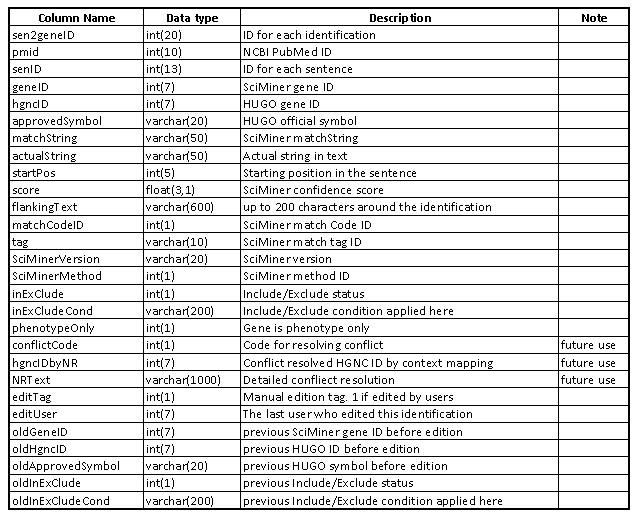
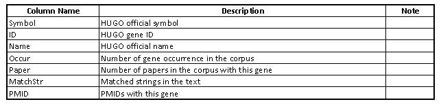

SciMiner Result File Formats
This is a brief introduction to the SciMiner reuslt file formats. If you have further question regarding the format, contact the author or the system administrator in charge of your local SciMiner version.
* Before filtering, after filtering, and filtered out files SciMinerBase.[Symbol,Name,Both].txt SciMinerBase.[Symbol,Name,Both].Remain.txt, SciMinerBase.[Symbol,Name,Both].Optout.txt
 * Each identification will be assigned a unique sen2geneID. * editTag, editUser, oldGeneID, oldHgncID, oldApprovedSymbol, oldInExclude, oldInExCludeCont involve munual editing from SciMiner result pages. If there has been no edition, these are either blank or 0.

* Unique targets SciMinerBase.[Symbol,Name,Both].Summary.txt
